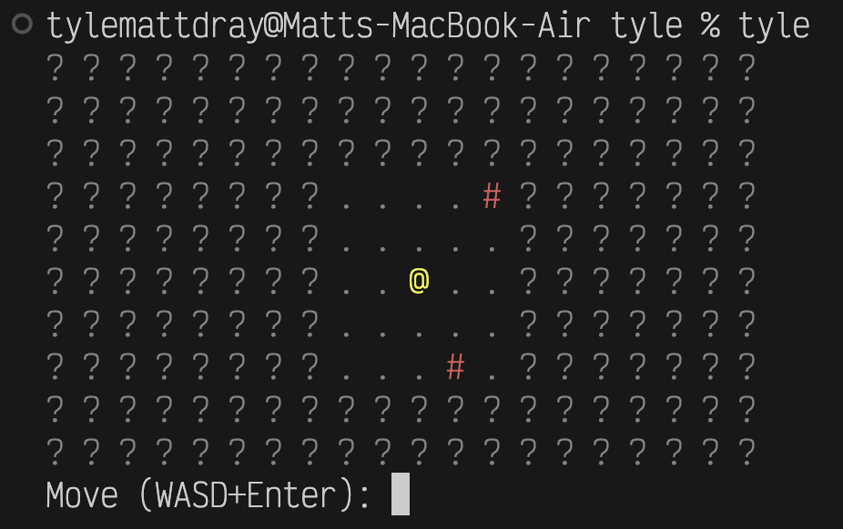

[project]
name = "2026-03-08-tyle-fog"
version = "0.1.0"
requires-python = ">=3.12"
dependencies = []
tl;dr
tyle, my Python-CLI roguelike-like, now has fog of war.
Grid and bare it
You may remember tyle: the beginnings of an in-terminal tile-based roguelike to help me improve my Python skills.
If it excites you, you could install like uv tool install git+https://github.com/matt-dray/tyle.git and initiate by typing tyle in a terminal.
You’ll get something like:
. . . # # . # . . . . . . . # . . . . .
. . . . . . . . . . . . . # . . . . . .
# . . . . . . . . . . . . # . . . . . .
. . # # . # . . . . . . . . . . . . . .
. . . . . . . . . . @ . . . . . . . . .
. . . . . . . . . . # . . # . . . . . .
. . . . . . . . . # # # . . . # . . . #
. . . . . . # . . . . . . # . . . . . #
. # . . # . . . . . . . . . . . . . . .
Move (WASD+Enter): Except it’ll have some colour if your terminal supports ANSI escape codes.
The big reveal
tyle could improve in many ways. For example, the development of enemies and pathfinding, procedural dungeons, or an inventory system.
A quick win is ‘fog of war’1.
This phrase refers to uncertainty when drawing up battle plans, but is also a mechanic in many videogames, including roguelikes.
A classic example is in the Civilization series of games. When you start, you cannot see the content of tiles you haven’t visited. The tiles are literally shrouded in fog. That keeps things interesting: will the next tile contain a barbarian hoarde or a potential city-founding location?
Fog lights
We can introduce fog into tyle with little effort.
For lore reasons, imagine the player character is carrying a lamp that illuminates a certain number of tiles in any direction2.
How can we achieve this practically?
You may remember that tyle has a TileGrid class. It has a draw() method to generate and print the current state of the tile map.
Previously, we drew the underlying terrain in the map by default, which is composed of traversable floor (symbol .) and non-traversable walls (#). The only exception was to draw the player in the location given by the Player-class row and column properties.
We can intercept this logic to draw fog-of-war symbols by default, unless within a certain tile-range of the player, in which case we draw the terrain.
For maximum portability—and as a hat-tip to the original roguelikes—we’ve been using ASCII symbols as ‘graphics’. We may as well continue for the fog.
I couldn’t think of anything cleverer than simply putting a ?, geddit. Also it’s coloured grey becuase that seems right.
Sound the foghorn
And so the relevant for-loop in the TileGrid class takes this shape:
for row in range(self.n_rows):
row_symbols = []
for col in range(self.n_cols):
if self.player.row == row and self.player.col == col:
symbol = self.player.symbol
elif max(
abs(self.player.row - row), abs(self.player.col - col)
) in range(0, self.fog):
symbol = self.tiles[row][col].symbol
else:
symbol = "?"So, for each row and column, print the symbol for the:
- player (
@) if matchingPlayer-class propertiesrowandcolumn - terrain tile (
.or#) if withinfognumber of tiles from the player - fog (
?) if no other conditions are met (i.e. all the remaining tiles)
In main() I’ve set fog = 2, so we’ll see fog beyond two tiles of the player.
That gives us something like:
? ? ? ? ? ? ? ? ? ? ? ? ? ? ? ? ? ? ? ?
? ? ? ? ? ? ? ? ? ? ? ? ? ? ? ? ? ? ? ?
? ? ? ? ? ? ? ? . . # . . ? ? ? ? ? ? ?
? ? ? ? ? ? ? ? . . . . . ? ? ? ? ? ? ?
? ? ? ? ? ? ? ? . . @ . . ? ? ? ? ? ? ?
? ? ? ? ? ? ? ? . . . . . ? ? ? ? ? ? ?
? ? ? ? ? ? ? ? . . . # . ? ? ? ? ? ? ?
? ? ? ? ? ? ? ? ? ? ? ? ? ? ? ? ? ? ? ?
? ? ? ? ? ? ? ? ? ? ? ? ? ? ? ? ? ? ? ?
Move (WASD+Enter): And moving left two steps gives us:
? ? ? ? ? ? ? ? ? ? ? ? ? ? ? ? ? ? ? ?
? ? ? ? ? ? ? ? ? ? ? ? ? ? ? ? ? ? ? ?
? ? ? ? ? ? ? ? ? ? ? ? ? ? ? ? ? ? ? ?
? ? ? ? ? ? # . . . # ? ? ? ? ? ? ? ? ?
? ? ? ? ? ? . . . . . ? ? ? ? ? ? ? ? ?
? ? ? ? ? ? . . @ . . ? ? ? ? ? ? ? ? ?
? ? ? ? ? ? # . . . . ? ? ? ? ? ? ? ? ?
? ? ? ? ? ? . . . . . ? ? ? ? ? ? ? ? ?
? ? ? ? ? ? ? ? ? ? ? ? ? ? ? ? ? ? ? ?
? ? ? ? ? ? ? ? ? ? ? ? ? ? ? ? ? ? ? ?
Move (WASD+Enter): Ooh, mysterious.
Mist opportunity?
Your ability to see n tiles around the player-character is pretty rudimentary. It implies that you, the player, have an omniscient top-down view of the playing area3… which you do, but that’s not very immersive4.
More advanced approaches might include a ‘cone of vision’. The player can only see what’s in their line of sight. In other words, they can’t see through walls.
Woah, woah. We’re not coding a full game engine from scratch.
Or are we, haha?
Environment
Session info
Footnotes
Coincidentally (?), my last post was about the {weva} CLI, which fetches a weather report. And actually it is a bit misty here tonight.↩︎
I mean, look, the hero is carrying a little lamp, right? Squint here:
@.↩︎Read Flatland by Edwin A Abbott.↩︎
How immersive can a grid of tiles in a terminal be? You tell me.↩︎